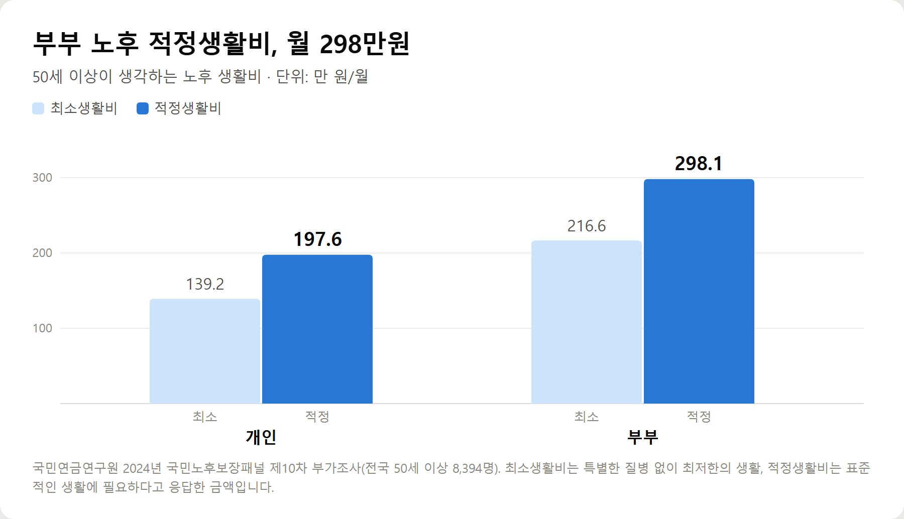
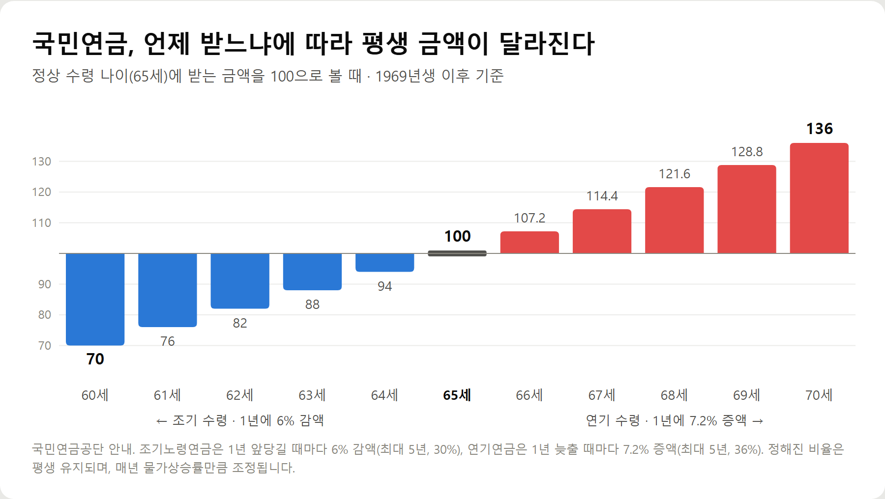
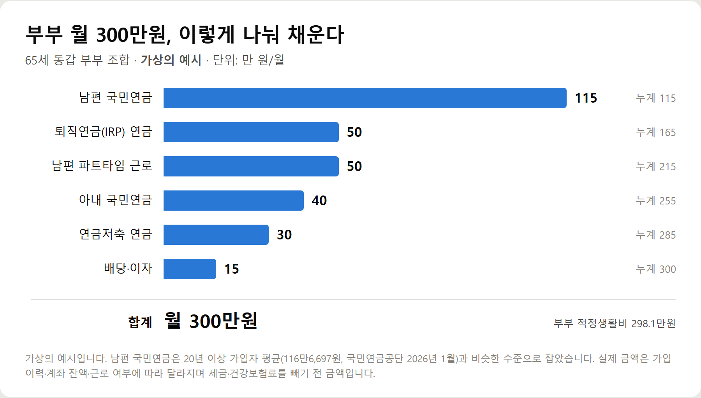
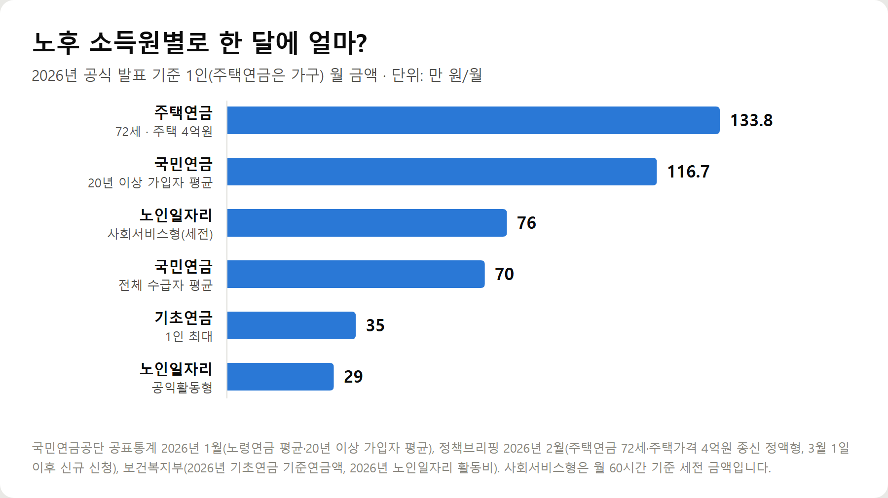

<meta charset="utf-8">
<title>은퇴 후 월 300만원 만드는 현실적인 방법 7가지 — 나의 투자 그리고 행복한 여행</title>
<meta name="description" content="은퇴 후 월 300만원 만드는 7가지 방법. 2026년 국민연금 감액 기준 519만원, 연기연금 7.2%, 퇴직금 IRP 세금 감면, 연금저축 1,500만원 분리과세, 주택연금 3.13% 인상, 기초연금 기준까지 정리.">
<meta name="viewport" content="width=device-width, initial-scale=1">
<link rel="canonical" href="https://danielmoon82.github.io/moon/posts/retire300-2026-09-15.html">
<link rel="preconnect" href="https://fonts.googleapis.com">
<link rel="preconnect" href="https://fonts.gstatic.com" crossorigin>
<link rel="stylesheet" href="https://fonts.googleapis.com/css2?family=Hahmlet:wght@400;600;800&family=IBM+Plex+Mono:wght@400;500&family=IBM+Plex+Sans+KR:wght@300;400;500;600&display=swap">

<style>
  :root{
    --paper:#F2EEE6;--surface:#FAF8F3;--surface-2:#E7E1D5;
    --ink:#191510;--ink-2:#4A4235;--ink-3:#7D7364;
    --line:#D6CEBF;--line-soft:#E4DDD0;--accent:#B06A15;--accent-bright:#C2761A;
    --up:#E5484D;--down:#3B82F6;
    --f-display:"Hahmlet",'Nanum Myeongjo',"Apple SD Gothic Neo",serif;
    --f-body:"IBM Plex Sans KR","Apple SD Gothic Neo","Malgun Gothic",sans-serif;
    --f-mono:"IBM Plex Mono","SFMono-Regular",Consolas,monospace;
    --pad:clamp(20px,5vw,64px);
  }
  @media (prefers-color-scheme:dark){
    :root:not([data-theme="light"]){
      --paper:#0B1120;--surface:#121A2C;--surface-2:#1A2439;
      --ink:#E9EEF7;--ink-2:#A9B5C9;--ink-3:#72809A;
      --line:#26314A;--line-soft:#1D2739;--accent:#E8A33D;--accent-bright:#F0B45C;
    }
  }
  *{box-sizing:border-box;}
  body{margin:0;background:var(--paper);color:var(--ink);font-family:var(--f-body);
    font-weight:300;font-size:1rem;line-height:1.75;-webkit-font-smoothing:antialiased;}
  a{color:inherit;}
  img{max-width:100%;height:auto;}
  .wrap{max-width:760px;margin:0 auto;padding-inline:var(--pad);}
  .nav{position:sticky;top:0;z-index:20;background:color-mix(in srgb,var(--paper) 88%,transparent);
    backdrop-filter:saturate(180%) blur(12px);border-bottom:1px solid var(--line);}
  .nav-in{display:flex;align-items:center;justify-content:space-between;height:58px;}
  .brand{font-family:var(--f-display);font-weight:600;font-size:1rem;letter-spacing:-.02em;text-decoration:none;}
  .back{font-family:var(--f-mono);font-size:.72rem;color:var(--ink-3);text-decoration:none;}
  .article{padding-block:clamp(40px,7vw,72px) clamp(56px,9vw,96px);}
  .eyebrow{font-family:var(--f-mono);font-size:.68rem;letter-spacing:.16em;text-transform:uppercase;
    color:var(--accent);margin:0 0 14px;}
  h1{font-family:var(--f-display);font-weight:800;font-size:clamp(1.6rem,4.4vw,2.3rem);
    line-height:1.3;letter-spacing:-.03em;margin:0 0 16px;}
  .byline{font-family:var(--f-mono);font-size:.72rem;color:var(--ink-3);
    padding-bottom:24px;border-bottom:1px solid var(--line);margin-bottom:32px;}
  h2{font-family:var(--f-display);font-weight:600;font-size:1.25rem;letter-spacing:-.02em;margin:42px 0 14px;}
  h3{font-family:var(--f-display);font-weight:600;font-size:1.05rem;letter-spacing:-.02em;
    margin:30px 0 10px;padding-top:14px;border-top:1px solid var(--line-soft);}
  h3 .code{font-family:var(--f-mono);font-size:.7rem;font-weight:400;color:var(--ink-3);margin-left:6px;}
  p{margin:0 0 18px;color:var(--ink-2);}
  ul.checks{margin:0 0 18px;padding-left:20px;color:var(--ink-2);}
  ul.checks li{margin-bottom:8px;font-size:.94rem;}
  table{width:100%;border-collapse:collapse;font-size:.88rem;margin-bottom:8px;}
  th{font-family:var(--f-mono);font-size:.66rem;letter-spacing:.06em;text-transform:uppercase;
    color:var(--ink-3);text-align:right;padding:8px 6px;border-bottom:1px solid var(--line);}
  th:first-child{text-align:left;}
  td{padding:10px 6px;border-bottom:1px solid var(--line-soft);color:var(--ink-2);}
  td.num{font-family:var(--f-mono);text-align:right;font-variant-numeric:tabular-nums;}
  td.up{color:var(--up);} td.down{color:var(--down);}
  .scroll{overflow-x:auto;}
  figure{margin:22px 0;}
  figure img{display:block;border-radius:3px;background:var(--surface-2);}
  figcaption{margin-top:8px;font-family:var(--f-mono);font-size:.68rem;color:var(--ink-3);text-align:center;}
  .note{margin-top:34px;padding:16px 18px;border-left:3px solid var(--accent);
    background:var(--surface);border-radius:0 3px 3px 0;}
  .note p{margin:0;font-size:.85rem;color:var(--ink-3);}
  .foot{border-top:1px solid var(--line);background:var(--surface);padding-block:30px 38px;}
  .foot p{margin:0;font-size:.8rem;color:var(--ink-3);}
</style>

<nav class="nav">
  <div class="wrap nav-in">
    <a class="brand" href="../index.html">나의 투자 그리고 행복한 여행</a>
    <a class="back" href="../index.html#stocks">← 시황으로</a>
  </div>
</nav>

<main class="wrap article">
  <p class="eyebrow">Market</p>
  <h1>은퇴 후 월 300만원 만들기 — 노후 소득 7가지 정리 (국민연금·기초연금·IRP·연금저축·주택연금, 2026)</h1>
  <p class="byline">투자 · 2026-09-15 기준</p>

  <p>한 줄 요약: 부부 노후 적정생활비는 월 298만1천 원인데 국민연금 1인 평균은 70만원이라, 월 300만원은 국민연금 극대화·일하면서 연금 지키기·퇴직연금·개인연금·주택연금·기초연금·금융소득을 겹쳐야 만들어집니다.</p>
  <p>국민연금연구원 노후보장패널, 국민연금공단 2026년 1월 공표통계, 2026년 6월 노령연금 감액 기준 개선, 주택연금 3월 인상 발표를 바탕으로 정리한 기록입니다.</p>
  <h2>핵심만 먼저</h2>
  <ul class="checks">
    <li>노후 적정생활비 — 50세 이상 기준 부부 월 298만1천 원, 개인 197만6천 원 (국민연금연구원)</li>
    <li>국민연금 평균 — 노령연금 1인 월 70만427원, 20년 이상 가입자는 116만6,697원 (2026년 1월)</li>
    <li>월 300만원은 한 가지로 안 된다 — 공적연금 + 퇴직연금 + 개인연금 + 집 + 일 + 금융소득을 겹친다</li>
    <li>2026년 달라진 점 — 일해도 월 519만3,511원 미만이면 국민연금이 깎이지 않고, 주택연금은 3월부터 3.13% 올랐다</li>
    <li>순서 — 먼저 내 국민연금 예상액을 확인하고, 부족한 금액을 나머지 여섯 가지로 채운다</li>
  </ul>
  <h2>노후 생활비, 한 달에 얼마면 될까</h2>
  <figure><figcaption>50세 이상이 생각하는 노후 최소·적정 생활비 — 개인·부부 기준, 단위: 만 원 (국민연금연구원 2024년 조사)</figcaption></figure>
  <p>국민연금연구원이 전국 50세 이상 8,394명에게 물은 결과(2024년 국민노후보장패널 제10차 부가조사), 부부가 표준적인 생활을 하는 데 필요한 적정생활비는 월 298만1천 원이었습니다. 특별한 여유 없이 최소한으로 사는 데 드는 최소생활비는 216만6천 원입니다.</p>
  <p>혼자라면 적정 197만6천 원, 최소 139만2천 원입니다.</p>
  <p>월 300만원이라는 목표는 부부 기준으로 '평범한 노후'에 해당하는 금액입니다. 이 숫자를 기준으로 내 소득이 얼마나 비는지부터 봐야 합니다.</p>
  <h2>국민연금만으로는 얼마나 부족한가</h2>
  <p>국민연금공단 공표통계(2026년 1월)에서 노령연금 1인당 월평균 수령액은 70만427원입니다. 가입 기간이 20년 이상인 136만8,813명으로 좁혀도 평균 116만6,697원입니다.</p>
  <p>월 200만원 이상 받는 사람은 11만6,138명으로 늘고 있지만, 월 40만원 미만을 받는 사람도 약 269만 명입니다.</p>
  <p>부부가 모두 20년 이상 가입해 평균만큼 받아도 230만원 남짓입니다. 한 사람만 오래 가입했다면 차이는 150만원 이상 벌어집니다. 이 빈 곳을 채우는 방법이 아래 일곱 가지입니다.</p>
  <h2>방법 1. 국민연금을 최대한 늘린다 — 연기연금·추납·임의계속가입</h2>
  <figure><figcaption>국민연금 수령 시기별로 받는 금액 비율 — 정상 수령 나이를 100으로 볼 때 조기 연 6% 감액, 연기 연 7.2% 증액</figcaption></figure>
  <p>가장 먼저 손볼 곳은 국민연금 자체입니다. 한 번 정해지면 평생, 물가에 맞춰 오르며 나오는 돈이기 때문입니다.</p>
  <ul class="checks">
    <li>연기연금 — 수령을 늦추면 1년에 7.2%씩, 최대 5년 36% 늘어난 금액을 평생 받습니다</li>
    <li>조기노령연금 — 앞당기면 1년에 6%씩, 최대 5년 30% 줄어든 금액을 평생 받습니다</li>
    <li>추후납부(추납) — 실직·휴직 등으로 보험료를 못 낸 기간을 나중에 채워 가입 기간을 늘립니다</li>
    <li>임의계속가입 — 60세가 지나도 보험료를 더 내 가입 기간을 채울 수 있습니다</li>
  </ul>
  <p>2026년부터 연금개혁으로 보험료율이 9%에서 9.5%로 올랐고, 2026년 이후 가입 기간에는 소득대체율 43%가 적용됩니다. 앞으로 더 내는 기간일수록 받는 몫이 조금 더 커지는 구조입니다.</p>
  <p>연기는 무조건 이득은 아닙니다. 늦게 받는 동안의 생활비를 다른 소득으로 버틸 수 있고, 건강이 괜찮을 때 유리합니다. 조기 수령은 감액이 평생 이어진다는 점을 먼저 따져야 합니다.</p>
  <h2>방법 2. 일하면서 연금은 지킨다 — 2026년 감액 기준 519만원</h2>
  <p>은퇴 뒤에도 일을 하면 소득이 가장 크게 늘어납니다. 걸림돌은 '일하면 국민연금이 깎인다'는 규정이었는데, 2026년 6월 17일부터 크게 완화됐습니다.</p>
  <p>예전에는 근로·사업소득이 A값(국민연금 전체 가입자의 3년 평균소득월액, 2026년 319만3,511원)을 넘으면 노령연금이 깎였습니다. 이제는 A값에 200만원을 더한 월 519만3,511원 이상일 때만 감액됩니다. 감액 5개 구간 중 소득이 낮은 1·2구간이 폐지됐습니다.</p>
  <p>2025년 소득 때문에 이미 깎인 연금은 신청하지 않아도 7월 말부터 국민연금공단이 자동으로 돌려줍니다.</p>
  <p>재취업이 어렵다면 정부 노인일자리도 있습니다. 2026년에는 115만2천 개가 제공됩니다.</p>
  <ul class="checks">
    <li>공익활동형 — 65세 이상 기초연금 수급자, 월 30시간 활동에 월 29만원</li>
    <li>사회서비스형 — 60·65세 이상, 보육시설·행정 지원 등 월 60시간에 월 76만원 수준(세전)</li>
    <li>유아돌봄 특화형(2026년 신설) — 교육 이수 후 월 최대 90만원</li>
  </ul>
  <h2>방법 3. 퇴직금은 IRP로 옮겨 연금으로 받는다</h2>
  <p>퇴직금을 한 번에 받으면 퇴직소득세를 전부 냅니다. 개인형퇴직연금(IRP) 계좌로 옮겨 55세 이후 연금으로 나눠 받으면 퇴직소득세가 30% 줄어듭니다. 연금 수령 10년이 넘어가는 부분부터는 40%가 줄어듭니다.</p>
  <p>세금만의 문제가 아닙니다. 목돈이 한꺼번에 들어오면 사업·투자·자녀 지원으로 빠르게 줄어들기 쉽습니다. 매달 나오게 묶어 두는 것 자체가 노후 소득을 지키는 장치가 됩니다.</p>
  <p>IRP 이전은 퇴직금을 받은 날부터 60일 안에 해야 세금을 나중으로 미룰 수 있습니다. 1년에 연금으로 받을 수 있는 금액에는 한도가 있어, 한도를 넘겨 빼면 감면이 적용되지 않습니다.</p>
  <h2>방법 4. 연금저축·IRP — 넣을 때 세금 돌려받고, 받을 때 낮은 세율</h2>
  <p>아직 일하고 있는 40·50대라면 가장 확실한 준비입니다. 연금저축은 1년 600만원, IRP를 합치면 900만원까지 세액공제를 받습니다.</p>
  <p>55세 이후 연금으로 받을 때는 연금소득세가 나이에 따라 5%(70세 미만), 4%(70~79세), 3%(80세 이상)로 매겨지고 지방소득세가 10% 더해집니다. 일반 이자·배당소득세(15.4%)보다 낮습니다.</p>
  <p>주의할 점은 1년 1,500만원입니다. 연금저축·IRP에서 받는 사적연금이 1년 1,500만원(월 125만원)을 넘으면 종합과세와 16.5% 분리과세 중에서 골라야 합니다. 월 300만원 계획에서 개인연금 몫을 월 125만원 안쪽으로 나누는 이유입니다.</p>
  <h2>방법 5. 집으로 연금을 받는다 — 주택연금</h2>
  <p>자산의 대부분이 집에 묶여 있다면 주택연금이 현실적인 선택입니다. 집에 계속 살면서 집을 담보로 평생 매달 연금을 받습니다.</p>
  <ul class="checks">
    <li>가입 조건 — 부부 중 1명이 55세 이상, 부부 합산 공시가격 12억원 이하 주택</li>
    <li>2026년 3월 1일 이후 신규 신청자부터 월지급금 약 3.13% 인상</li>
    <li>예시 — 72세, 주택가격 4억원(종신 정액형 평균 가입자) 월 129만7천 원 → 133만8천 원</li>
    <li>초기보증료 1.5% → 1.0%로 인하 (정책브리핑, 2026년 2월)</li>
  </ul>
  <p>가입 나이가 많을수록, 집값이 높을수록 월지급금이 커집니다. 부부 중 한 사람이 먼저 세상을 떠나도 남은 배우자가 같은 금액을 계속 받습니다.</p>
  <p>대신 집을 자녀에게 그대로 물려주기는 어려워집니다. 가족과 먼저 이야기해 두는 것이 좋습니다. 내 집 기준 예상액은 한국주택금융공사 '예상연금조회'에서 확인할 수 있습니다.</p>
  <h2>방법 6. 기초연금 대상인지 확인한다</h2>
  <p>65세 이상이면 기초연금 대상인지 한 번은 확인해야 합니다. 소득과 재산을 합친 '소득인정액'이 2026년 단독가구 월 247만원, 부부가구 월 395만2천 원 이하면 받을 수 있습니다.</p>
  <p>2026년 1인 최대 금액(기준연금액)은 월 34만9,700원입니다. 일해서 버는 근로소득은 소득인정액을 계산할 때 116만원을 먼저 빼 줍니다.</p>
  <p>국민연금을 많이 받거나 부부가 함께 받으면 금액이 줄어들 수 있습니다. 대상이 아닐 거라고 미리 단정하지 말고 국민연금공단 지사나 주민센터에서 모의계산을 받아 보는 편이 낫습니다.</p>
  <h2>방법 7. 배당·이자 금융소득 — 건강보험 피부양자 기준을 먼저 본다</h2>
  <p>예금 이자, 배당주, 월배당 ETF 같은 금융소득은 마지막 퍼즐입니다. 매달 들어오는 현금흐름을 만들 수 있지만 원금이 흔들릴 수 있고 세금이 따라옵니다.</p>
  <p>은퇴자에게 가장 큰 변수는 건강보험료입니다. 자녀의 직장 건강보험 피부양자로 올라가 있다면, 이자·배당·연금·근로·사업소득을 합친 금액이 1년 2,000만원을 넘는 순간 피부양자에서 빠지고 지역가입자로 보험료를 따로 내야 합니다.</p>
  <p>분배율이 높다는 월배당 상품도 원금이 함께 빠지면 실제 수익은 마이너스일 수 있습니다. 분배율만 보고 고르면 안 되는 이유는 아래 관련 글에 따로 정리해 두었습니다.</p>
  <h2>실제 예시 — 부부 월 300만원 조합</h2>
  <figure><figcaption>부부 월 300만원 소득 조합 — 가상의 예시, 단위: 만 원/월</figcaption></figure>
  <p>아래는 이해를 돕기 위한 가상의 예시입니다. 65세 동갑 부부, 남편은 국민연금 20년 이상 가입, 아내는 가입 기간이 짧고, 집은 그대로 두는 경우입니다.</p>
  <ul class="checks">
    <li>남편 국민연금 115만원 — 20년 이상 가입자 평균(116만6,697원)과 비슷한 수준</li>
    <li>아내 국민연금 40만원</li>
    <li>퇴직연금(IRP) 연금 수령 50만원</li>
    <li>연금저축 연금 수령 30만원 — 부부 각자 사적연금 1,500만원 한도 안</li>
    <li>남편 파트타임 근로소득 50만원 — 감액 기준(519만3,511원)과 거리가 멀어 국민연금은 그대로</li>
    <li>배당·이자 금융소득 15만원</li>
  </ul>
  <p>합계 300만원입니다. 여기서 국민연금 몫(155만원)은 절반을 조금 넘습니다. 나머지 145만원을 퇴직연금·개인연금·일·금융소득이 나눠 맡는 구조입니다.</p>
  <p>파트타임 일을 그만두는 70대가 되면 50만원이 비게 됩니다. 그때 주택연금에 가입하면 나이가 들수록 커지는 월지급금으로 이 자리를 채울 수 있습니다. 소득원마다 '언제 끝나는지'를 같이 적어 두어야 하는 이유입니다.</p>
  <h2>소득원별 조건 한눈에 보기</h2>
  <figure><figcaption>노후 소득원별 월 금액 기준 — 2026년 공식 발표 기준, 단위: 만 원/월</figcaption></figure>
  <ul class="checks">
    <li>국민연금 — 평균 월 70만원, 20년 이상 116만7천 원. 연기 시 연 7.2% 증액, 조기 시 연 6% 감액</li>
    <li>일하면서 국민연금 — 근로·사업소득 월 519만3,511원 미만이면 감액 없음 (2026년 6월 17일부터)</li>
    <li>노인일자리 — 공익활동 월 29만원, 사회서비스형 월 76만원 수준, 유아돌봄 특화형 최대 90만원</li>
    <li>퇴직연금(IRP) — 연금 수령 시 퇴직소득세 30% 감면(10년 초과분 40%), 퇴직 후 60일 안 이전</li>
    <li>연금저축·IRP — 넣을 때 900만원까지 세액공제, 받을 때 3~5%(+지방세), 연 1,500만원 초과 시 과세 방식 선택</li>
    <li>주택연금 — 55세 이상·공시가 12억 이하. 72세·4억원 월 133만8천 원 (2026년 3월 이후 신청)</li>
    <li>기초연금 — 소득인정액 단독 247만·부부 395만2천 원 이하, 1인 최대 월 34만9,700원</li>
    <li>금융소득 — 건강보험 피부양자는 합산소득 연 2,000만원 이하여야 유지</li>
  </ul>
  <h2>놓치기 쉬운 부분 — 소득 '금액'보다 '끝나는 시점'과 '세금·건보료'</h2>
  <p>월 300만원을 맞추는 것보다 더 자주 틀리는 것이 시점입니다. 국민연금·주택연금은 평생 나오지만, 퇴직연금과 연금저축은 계좌 잔액이 떨어지면 끝나고, 근로소득은 건강이 허락할 때까지만 들어옵니다.</p>
  <p>가장 흔한 틈은 퇴직 후 국민연금을 받기 전까지의 몇 년입니다. 1969년생 이후는 65세부터 국민연금을 받는데, 50대 후반에 회사를 나오면 5년 가까이 공적연금 없이 버텨야 합니다. 이 기간을 퇴직연금이나 재취업으로 먼저 메우고, 국민연금은 가능하면 앞당기지 않는 것이 평생 받는 총액에 유리한 경우가 많습니다.</p>
  <p>두 번째는 세금과 건강보험료입니다. 같은 월 300만원이라도 사적연금이 연 1,500만원을 넘거나, 금융소득 때문에 피부양자에서 빠지면 실제로 쓸 수 있는 돈이 줄어듭니다. 계획은 세전이 아니라 세금·건보료를 뺀 금액으로 세워야 합니다.</p>
  <h2>이런 분께 맞는 방법</h2>
  <ul class="checks">
    <li>아직 일하는 40·50대 — 연금저축·IRP 세액공제부터. 국민연금 추납 가능 기간이 있는지 확인</li>
    <li>퇴직을 앞둔 50대 후반 — 퇴직금 IRP 이전, 국민연금 받기 전 공백 기간 계획</li>
    <li>집 한 채가 자산의 대부분인 60대 — 주택연금 예상액 조회, 가족과 상속 이야기</li>
    <li>건강하고 일할 수 있는 60대 — 재취업·노인일자리, 2026년 감액 기준 완화 활용</li>
    <li>소득·재산이 적은 65세 이상 — 기초연금 모의계산부터</li>
  </ul>
  <h2>자주 묻는 질문</h2>
  <p>Q. 은퇴 후 노후 생활비는 한 달에 얼마가 필요한가요?</p>
  <p>국민연금연구원 조사에서 50세 이상이 생각하는 적정생활비는 부부 월 298만1천 원, 개인 197만6천 원입니다. 최소생활비는 부부 216만6천 원, 개인 139만2천 원입니다. 사는 지역과 집 보유 여부에 따라 차이가 큽니다.</p>
  <p>Q. 일하면 국민연금이 깎이나요?</p>
  <p>2026년 6월 17일부터는 근로·사업소득이 월 519만3,511원(A값+200만원) 이상일 때만 노령연금이 감액됩니다. 그 아래라면 일해도 연금이 깎이지 않습니다.</p>
  <p>Q. 국민연금은 늦게 받는 게 유리한가요?</p>
  <p>1년 늦출 때마다 7.2%씩 늘어나 최대 36%까지 커집니다. 다만 늦추는 동안 생활비를 다른 소득으로 감당할 수 있고 건강이 좋을 때 유리합니다. 오래 받을수록 연기의 효과가 커집니다.</p>
  <p>Q. 기초연금과 국민연금을 같이 받을 수 있나요?</p>
  <p>같이 받을 수 있습니다. 다만 국민연금 수령액이 많거나 부부가 함께 기초연금을 받으면 기초연금이 줄어들 수 있습니다. 정확한 금액은 국민연금공단이나 주민센터에서 모의계산으로 확인하세요.</p>
  <p>Q. 연금을 받으면 건강보험 피부양자에서 빠지나요?</p>
  <p>연금·이자·배당·근로·사업소득 등을 합친 금액이 1년 2,000만원을 넘으면 피부양자 자격을 잃습니다. 재산 요건도 따로 봅니다.</p>
  <h2>정리하면</h2>
  <p>부부 노후 적정생활비는 월 298만원이지만 국민연금 평균은 1인 70만원입니다. 월 300만원은 국민연금을 최대한 늘리고, 퇴직금은 IRP 연금으로, 개인연금은 세금 한도 안에서 나눠 받고, 집과 일과 금융소득으로 나머지를 겹쳐야 만들어집니다.</p>
  <p>가장 먼저 할 일은 국민연금공단 '내 연금 알아보기'에서 예상 수령액을 조회하는 것입니다. 부족한 금액이 얼마인지 알아야 나머지 여섯 가지 중 무엇을 얼마나 준비할지 정할 수 있습니다.</p>
  <p>다음 글에서는 국민연금 연기연금의 손익분기 나이와, 퇴직금을 IRP로 받을 때 세금이 실제로 얼마나 줄어드는지 계산해 보겠습니다.</p>
  <p><b>함께 보면 좋은 글</b> — <a href="https://danielmoon82.github.io/moon/posts/covered-call-etf-2026-09-09.html">월배당 ETF 연 10% 분배율의 함정 — 커버드콜 ETF 구조부터 세금까지</a></p>
  <div class="note"><p>이 글은 국민연금공단·보건복지부·한국주택금융공사 자료와 언론 보도를 바탕으로 한 일반 정보이며 투자·세무 조언이 아닙니다. 개인별 연금액, 세금, 기초연금·주택연금 수령액은 가입 이력과 소득·재산에 따라 다르므로 해당 기관에서 확인하세요. 조합 예시는 가상의 사례입니다.</p></div>
  <p>※ 기준 시점: 노후 적정생활비는 국민연금연구원 2024년 국민노후보장패널 제10차 부가조사, 국민연금 수령액은 국민연금공단 공표통계 2026년 1월, 노령연금 감액 기준은 2026년 6월 17일 시행, 기초연금은 2026년 기준, 주택연금 월지급금은 2026년 3월 1일 이후 신규 신청자 기준, 노인일자리는 2026년 사업 기준, 세제는 2026년 9월 확인 기준입니다.</p>
</main>

<footer class="foot">
  <div class="wrap"><p>나의 투자 그리고 행복한 여행 · 투자 판단의 참고 자료일 뿐, 매수·매도를 권유하지 않습니다.</p></div>
</footer>
